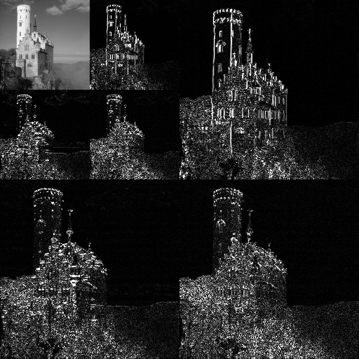

layout: true class: black-theme --- class: center, middle, smokescreen background-image: url(./images/Solvay_conference_1927.jpg) # The Brave New World Of Science ## Complexity, Nonlinearity, and Computation in the Space of Neural Networks --- class: bullet-points # Goals ## Explain the big picture of theoretical works on Neural Networks. -- 1. Explain the paradigm shift of <em>Science</em> since 1970s -- 2. Explain the paradigm shift in <em>Signal Processing</em> -- 3. Explain why such a shift occurs with <em>Neural Networks</em> as an example --- # Goal 1: The Paradigm Shift > It is sometime said that the greatest discovery of <em>nineteenth</em> century was that > equations of nature were <em>linear</em>, and the great discovery of the <em>twentieth</em> > century is that they are <em>not</em>. > --- Korner T. W. -- .column-left.bullet-points[ * Simple * Linear * Analytic ] -- .column-center[ <br> <span style="font-family: 'Orbitron Light';">Paradigm Shift</span> <br> ==============> ] .column-right.bullet-points[ * Complex * Nonlinear * Computational ] --- # Goal: To Explain .banner[ * Simple * Linear * Analytic ] --- layout: true class: black-theme # The kind of problems that we are good at solving --- .banner[ the problems that can be broken down into pieces, ] -- .banner[ then linearly combined to reproduce the whole. ] --- .banner[ $$ [1, 1, 1] = [1, 0, 0] + [0, 1, 0] + [0, 0, 1] $$ ] --- ## Image Compression <figure style="height: 40%;"> <div style="font-size: 200%; display: inline-block; height=100%; vertical-align: 80%;">=</div> <div style="font-size: 200%; display: inline-block; height=100%; vertical-align: 80%;">+</div> <div style="font-size: 200%; display: inline-block; height=100%; vertical-align: 80%;">+</div> </figure> --- layout: true class: black-theme # More Examples: Energy Diffusion --- background-image: url(./images/fourier.jpg) ## Fourier -- .banner[ Fourier characterizes how energy propagates in nature. ] --- class: bg-size-contain background-image: url(./images/water_wave.jpg) ## Water Wave --- class: bg-size-contain background-image: url(./images/string_vibration.jpg) ## String Vibration --- class: bg-size-contain background-image: url(./images/heat_diffusion.jpg) ## Heat Diffusion <br> <br> <br> <br> <br> <br> <br> <br> <br> $$ u\_{t} = \frac{1}{2}u\_{xx}, u(x, t) = \sum\limits\_{-\infty}^{\infty}\hat{f}(n)e^{-2\pi^{2}n^{2}t}e^{2\pi inx} $$ --- class: bg-size-contain background-image: url(./images/elegwaves.png) ## Electromagnetic wave <br> <br> <br> <br> <br> <br> <br> <br> <br> $$ E \propto \int^{\infty}\_{-\infty}A(x)e^{-2\pi i\frac{\sin\theta}{\lambda}x}dx $$ --- layout: true class: black-theme --- # The Math Behind .banner[ Milestones in the 20th century (1900 - 1980 roughly): Matrix, Tensor, Hilbert Space, Von Neumon Algebra, Wavelet etc. ] --- # Simple Paradigm ## The paradigm of previous examples * Simple: understanding one component is sufficient for the understanding the whole system -- * Linear: the system can be composed by linearly combining individual components -- * Analytic: Solution can be found analytically without relying on massive computation -- .banner[ [Restart](#12) ] --- layout: true class: black-theme # The State of Science --- .long-banner[But to understand nature completely, the understanding of one component does not equate with understanding the whole.] --- layout: true class: black-theme --- class: img-caption  Sub-atomic and atomic interaction can be described by Schrödinger equation, which involves unbounded <em>linear</em> operators. [1] .footnote[[1]: Kreyszig, Introductory Functional Analysis With Application] --- class: img-left # Simple System of Atoms  Schrödinger equation could theoretically predict the structure of molecules that are composed by <em>simple</em> system of not-too-many number of atoms, i.e., <em>water molecules</em> and Pauling's exclusion principle --- layout:true class: bg-size-contain, black-theme background-image: url(./images/Protein_folding.png) # Complex System of Atoms ## Protein Folding <br> <br> <br> <br> <br> <br> <br> --- -- .text-area[ Protein normally has thousands of atoms. [<=](#65) ] -- .text-area[ Protein folding studies the biological mechanism that how protein works; that is, how basic components of organism works. ] --- .text-area[ Protein folding is the physical process by which a protein chain acquires its native 3-dimensional structure, a conformation that is usually biologically functional, in an expeditious and reproducible manner. .footnote[Image Source: Wikipedia, https://en.wikipedia.org/wiki/Protein_folding] ] --- layout: true class: img-left, black-theme # Complex System of Atoms  ## Protein Folding --- While study of a complex system thousands of atoms, <em>new objects need to be studied instead of solving equations</em>, i.e., energy landscape, to characterize and simulate the reaction happening during protein folding. The problem becomes saliently <em>complex, nonlinear, and computational</em>. .footnote[ Image Source: p. 552, David J. Wales Energy Landscape ] --- At the top right corner are the initial state of the protein, which is a <em>random coil</em>. -- By studying its energy landscape, we can find a stable state at the bottom, which has a <em>structure of lattice</em>. --- layout: true class: black-theme # The State of Science --- background-image: url(./images/lots_of_bricks.jpg) .banner[ In the <em>Simple Paradigm</em>, we researched on how <em>bricks</em> are made. ] -- .banner[ They are laws in particular <em>characteristic scales</em>. ] --- # From Bricks to Pyramids .column-left[  Characteristic scale: <br>~ 10 cm ] -- .column-center[ <br> <br> <span style="font-size: 200%"> =====></span> ] .column-right[  Characteristic scale: <br>~ 10000 cm ] --- * The elements of science X obeys the laws of science Y. * Science X is a complex system of elements in Y * Nature is built by recursive complex systems. | X | Y | |----------------------------------:|:----------------------------| | Solid state, or many-body physics | elementary particle physics | | chemistry | many-body physics | | molecular biology | chemistry | | cell biology | molecular biology | | * | * | | * | * | | * | * | | psychology | physiology | | social sciences | psychology | .footnote[ Source: P W, Amderson, More is Different, Science, 1972 ] --- ## Side Note .long-banner[ Ultimately, we may move into the area of philosophy (scientific humanism), arts, religion, morality, c.f. Wilson, *The Consilience: The Unity of Knowledge* ] --- background-image: url(./images/flying_pyramid.jpg) .banner[ Now we are studying how the bricks can be used to build the pyramid. ] --- layout: true class: black-theme background-image: none --- # Complex Paradigm ## Paradigm of Complex Systems: * Complex: the system behavior depends on the interaction between components and the properties of individual components <span style="font-size: 50%;">--- understanding a basic element is not sufficient for understanding the whole system.</span> -- * Nonlinear: the relationship between the system and its components are nonlinear, and cannot be approximated linearly. -- * Computational: Solutions can only be found through simulation, or numerical computation with massive computing power. --- layout: true class: black-theme --- # Disclaimer The conceptualization in progress. Just to give a big picture. --- # Goal 2: Paradigm Shift in Signal Processing The frontiers of signal processing are undertaking similar paradigm shift: -- .column-left.bullet-points[ * Simple * Linear * Analytic ] .column-center[ <br> <span style="font-family: 'Orbitron Light';">Paradigm Shift</span> <br> ==============> ] .column-right.bullet-points[ * Complex * Nonlinear * Computational ] --- class: bg-size-contain background-image: url(./images/signal_processing_as_pr.jpg) ## Signal Processing as Pattern Recognition <br> <br> <br> <br> <br> <br> <br> <br> <br> <br> Oversimplifying, we can view signal processing as extraction relevant patterns in the signals. --- layout: true class: black-theme # A Real World Example --- <figure style="height: 60%;"> <img src="./images/2d_filter_banks.jpg" style="height: 50%;" alt="Cirrus"> <div style="font-size: 300%; display: inline-block; height=100%; vertical-align: 80%;">+</div> <br> <br> <br> <div style="font-size: 300%; display: inline-block; height=100%; vertical-align: 80%;">=</div>  </figure> --- layout: true class: black-theme # History of Signal Processing --- class: bg-size-contain background-image: url(./images/fourier.jpg) <br> <br> <br> <br> <br> <br> <br> <br> <br> <br> <br> <br> <br> ## Fourier Analysis --- class: bg-size-contain background-image: url(./images/2d_filter_banks.jpg) <br> <br> <br> <br> <br> <br> <br> <br> <br> <br> <br> <br> <br> ## Wavelet Analysis --- class: bg-size-contain background-image: url(./images/dictionary_learning.jpg) <br> <br> <br> <br> <br> <br> <br> <br> <br> <br> <br> <br> <br> <h2>Dictionary Learning <span style="text-align: right; font-size: 20%;">Source: Michael Elad, <a href="https://slideplayer.com/slide/4500013/">Link</a></span> </h2> --- layout: true class: black-theme # Signal Processing as One Layer Neural Network --- .text-area[ Though each one targets on problems that the others are ill-suited to solve, they are systems moving from simple, linear systems to nonlinear computational systems (parts of wavelets and dictionary learning are not analytic anymore). ] --- <iframe style="width: 100%; height: 60%;" src="http://playground.tensorflow.org"></iframe> --- .text-area[ * They are simple: no more than hundreds of filters * They are linear: signals are linear decomposed by filters * They move from analytic to computational. ] --- <iframe style="width: 100%; height: 60%;" src="http://playground.tensorflow.org/#main-part"></iframe> --- class: bg-size-contain background-image: url(./images/alexnet.png) <br> <br> <br> <br> <br> <br> <br> <br> <br> <br> <br> <br> <br> ## Alex Net (7 Layers) --- class: bg-size-contain background-image: url(./images/vggnet.png) <br> <br> <br> <br> <br> <br> <br> <br> <br> <br> <br> <br> <br> ## VGG Net (~20 Layers) --- class: bg-size-contain background-image: url(./images/resnet.jpeg) <br> <br> <br> <br> <br> <br> <br> <br> <br> <br> <br> <br> <br> ## Residual Net (~100 Layers) --- .column-left.bullet-points[ * Simple (hundreds of filters) * Linear * Analytic (projection) ] -- .column-center[ <br> <br> <br> <br> <br> <span style="font-family: 'Orbitron Light';">Paradigm Shift</span> <br> ==============> ] .column-right.bullet-points[ * Complex (millions of filters) * Nonlinear (nonlinear activation) * Computational (optimization) ] --- layout: true class: black-theme # Goal 3: Why a paradigm shift? --- .banner[ To know what is happening is important; yet it is more important to learn why it is happening. ] --- The paradigm shift (Simple -> Complex) answers the call for the study of a new phenomenon, <em>the causality across scales</em>: the interaction of so many events that their collective behavior manifests at a scale beyond their characteristic scale. [<=](#88) .column-left[  Characteristic scale: <br>~ 10 cm ] .column-center[ <br> <br> <span style="font-size: 200%"> =====></span> ] .column-right[  Characteristic scale: <br>~ 10000 cm ] --- layout: true class: black-theme ## NNs Answers The Paradigm Shift Subconsciously --- class: img-left ### Microscopic Patterns  Simple methods identifies simple/microscopic patterns in raw signals, e.g., edges in images, that is within the characteristic scale of the raw signals. --- class: img-left ### Macroscopic Patterns  Neural Networks identifies complex/macroscopic patterns in raw signals that composed by thousands of pixels, e.g., faces in images, that is beyond the characteristic scale of raw signals. .banner[ Recall [Protein Folding](#28) ] --- .long-banner[ In the following, we will show **theoretically** that NNs answer the call to tell apart any macroscopic patterns in signals. ] --- layout: true class: black-theme --- class: img-left ## Binary Classification Problem  .banner[ Given a set of samples, classify them into two classes. ] --- class: bg-size-contain background-image: url(./images/face_verification.png) ## Binary Classification Problem in Perception <br> <br> <br> <br> <br> <br> <br> <br> <br> <br> <br> <br> #### Given two faces, classify them into two classes: are they the same person? --- class: middle <br> <br> <br> <br> <br> <br> .banner[ Is there theoretical guarantee that a generalizable algorithm exists to classify the two patterns? ] --- layout: true class: black-theme ## The Milestone of Simple Paradigm: Kernel Machine --- <figure style="height: w0%; text-align: center;"> </figure> As mentioned previously, signal processing can be taken as pattern matching: $$ \langle x, t \rangle $$ -- If the pattern consists of multiple sub-patterns, we can linearly combine the pattern matching scores to build a classifier: $$ \sum\_{i=1}^{k} a\_k \langle x, t\_k \rangle $$ --- Since the normal inner product only measures linear correlation, to deal with "nonlinear correlation", we may apply the kernel trick, which defines a new inner product through a positive definite kernel: $$ \sum\_{i=1}^{k} a\_k \langle x, K t\_k \rangle $$ -- .banner[ but, essentially it still is glorified inner product based template matching ] --- .banner[ We know that distance generalizes poorly in high dimension space. ] -- .long-banner[ Though Support Vector Kernel Machine reaches local minima, it cannot guarantee to tell two patterns apart (reach zero errors) in a generalizable way. ] --- layout: true class: black-theme --- <br> <br> <br> <br> <br> .banner[ # NNs can guarantee to tell apart two classes on conditions. ] --- layout: true class: black-theme ### NNs can guarantee to tell apart two classes on conditions: --- ### Boundedness Condition 1. $\exists C \in \mathbb{R}, \forall N \in \mathbb{N}, ||\boldsymbol{A}|| \leq C$, where $||\boldsymbol{A}||$ denotes the operator norm. 2. $\exists \mu\_q \in \mathbb{R}, \forall q \in \mathbb{N}, \forall \alpha \in \mathbb{J}, \mathbb{E}[|\boldsymbol{W}\_{\alpha}|^{q}] \leq \mu\_q$, where $\mathbb{J} = \mathbb{I} \times \mathbb{I}$, and $\mathbb{I} = \{1, \ldots, N\}$. 3. $\exists C\_1, C\_2 \in \mathbb{R}, \forall R \in \mathbb{N}, \epsilon > 0$, $|||\kappa|||^{\text{ iso}}\_{2} \leq C\_1$, $ |||\kappa||| \leq C\_2 N^{\epsilon}$; 4. $\exists 0 < c < C, \forall \boldsymbol{T} \succ \boldsymbol{0}, c\ N^{-1}\text{ tr} {\boldsymbol{T}} \preceq \mathcal{S}[\boldsymbol{T}] \preceq C N^{-1} \text{ tr} \boldsymbol{T}$. --- ### Diversity Condition There exists $\mu > 0$ such that the following holds: for every $\alpha \in \mathbb{I}$ and $q, R \in \mathbb{N}$, there exists a sequence of nested sets $\mathcal{N}\_k = \mathcal{N}\_k(\alpha)$ such that $\alpha \in \mathcal{N}\_1 \subset \mathcal{N}\_2 \subset \cdots \subset \mathcal{N}\_R = \mathcal{N} \subset \mathbb{I}, |\mathcal{N}| \leq N^{1/2 - \mu}$ and \begin{align\*} & \kappa \biggl( f(\boldsymbol{W}\_{\mathbb{I}\setminus \cup\_{j}\mathcal{N}\_{n\_j + 1}(\alpha\_j)}), g\_1(\boldsymbol{W}\_{\mathcal{N}\_{n\_1}(\alpha\_1)\setminus \cup\_{j\neq 1}\mathcal{N}(\alpha\_{j})}), \ldots,\\\\ & g\_q(\boldsymbol{W}\_{\mathcal{N}\_{n\_q}(\alpha\_q)\setminus \cup\_{j\neq q}\mathcal{N}(\alpha\_{j})}) \biggr) \leq N^{-3q}||f||\_{q+1}\prod\_{j=1}^{q}||g\_j||\_{q+1} \end{align\*} , for any $n\_1, \ldots, n\_q < R$, $\alpha\_1, \ldots, \alpha\_q \in \mathbb{I}$ and real analytic functions $f, g\_1, \ldots, g\_q$, where $||||\_{p}$ is the $L^{p}$ norm on function space. --- ### Theorem Let $R\_m(T)$ be the risk function of a NN with <em>hinge loss</em>. If the Hessian $\boldsymbol{H}$ of $R\_m(T)$ satisfies previous assumptions, $\mathbb{E}(\boldsymbol{H}) = \boldsymbol{0}$, and <em>$N \rightarrow \infty$</em>, then * <em>all local minima are global minima with zero risk</em> * A constant $\lambda\_0 \in \mathbb{R}$ exists, such that the operator norm $||\boldsymbol{H}||$ of $\boldsymbol{H}$ is upper bounded by $\mathbb{E}\_m[l'(T(X), Y)] \lambda\_0$, where $\mathbb{E}\_m[l'(T(X), Y)]$ is the empirical expectation of $l'$. It implies the regions around the minima are flat basins, where the eigen-spectrum of $\boldsymbol{H}$ is increasingly concentrated around zero. --- layout: true class: black-theme # Theorem Explained --- #### We would have the loss landscape of neural networks as: <figure style="height: 50%; text-align: center;"> <figcaption> All local minima (black dots) are global minima. All non-local minima stationary points are saddle points (white dot). <figcaption> </figure> --- #### The theorem and the conditions essentially state it solves binary classification if: .banner[ 1. the network is complex/large enough 2. no activation paths dominate the network 3. activation paths in the network does not correlate with the majority of the other paths. ] --- class: img-left #### Activation paths are entries of Hessian of loss function Entries of Hessian of the loss function are the products of forward propagated neuron activation $\tilde{\boldsymbol{x}}^{T}\_{p-1}$ at layer $p-1$, the back propagated ``gradient'' $\tilde{\boldsymbol{\alpha}}\_{q}$ at layer $q$, and the strength of activation paths $\tilde{\boldsymbol{W}}\_{p\sim(q-1)}$ that connects the neurons at layer $p$ and $q-1$. --- .banner[ Activation paths can be understood as hierarchical composite relationship between neurons. [=>](#81) ] --- #### How strong the correlation between paths can be? <figure style="height: 50%; background-color: white; border: 10px solid rgba(0, 0, 0, 0.1); text-align: center;"> <img src="./images/diversity_illustration.jpg" style="height: 100%;" alt="Cirrus"> <br> <br> <figcaption> For a given activation path $\alpha$, it can have strong correlation with all the white pixels; while have low correlation with the black pixels. </figcaption> </figure> --- #### How strong the correlation between paths can be? .long-banner[ For each path, in a 10-layer NN with 100 neurons in each layer, it can correlate with $10^4$ other paths among all $10^8$ paths in the NN. ] --- layout: true class: black-theme ## The phenomenon the theorem characterizes <figure style="width: 35%; text-align: center; height: 70%; float: left; background-color: white; border: 10px solid rgba(0, 0, 0, 0.1);"> </figure> <br> --- * The network is large enough, so it can learn the hierarchical relationship between a macroscopic pattern and the microscopic raw signals of the pattern (instead of template-based memorization as in simple models). --- * Information is coded hierarchically in the activation paths (instead of a single template as in simple models). * A macroscopic pattern consists of a large number of composite sub-patterns (activation paths), which are independent with each other. --- layout: true class: black-theme --- class: middle <br> <br> <br> <br> .long-banner[ Overall, NNs are reproducing the hierarchy in nature to identify complex patterns, which is inevitable since the patterns are phenomena at higher scales. [=>](#63) ] --- class: middle, center <br> <br> <br> <br> <br> <br> <br> # No Complexity, No Scale --- The detail on the theorem can be found at * Shuai Li, Kui Jia, The Benign Loss Landscape of Large-Size Deep Nonlinear Neural Networks, [Preprint](https://shawnleezx.github.io/images/optnn.pdf) --- # Take away * Paradigm shift happens in science, and in machine learning .column-left.bullet-points[ * Simple * Linear * Analytic ] .column-center[ <br> <span style="font-family: 'Orbitron Light';">Paradigm Shift</span> <br> ==============> ] .column-right.bullet-points[ * Complex * Nonlinear * Computational ] -- <br> <br> <br> <br> * To do research under the new paradigm requires understanding complexity, nonlinearity, and solve problem with computation --- # Notes * We do not have proper practical generalization guarantee yet. But they are within reach. But NNs generalize in practice. * This slide is not about how to understand complexity, or nonlinearity, or computational, each of which is a huge topic on its own. * This slide is also not about how to do theory work in neural networks, which is also a huge topic on its own. --- class: middle, center <br> <br> <br> <br> <br> <br> <br> # FAQ